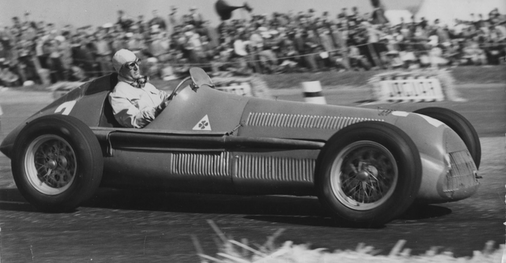
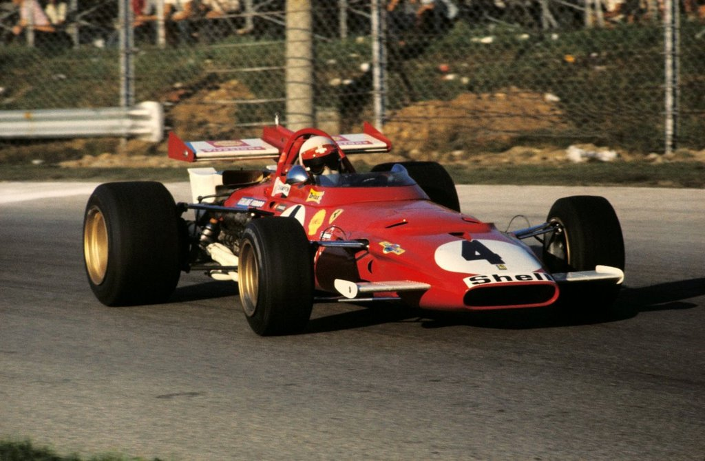
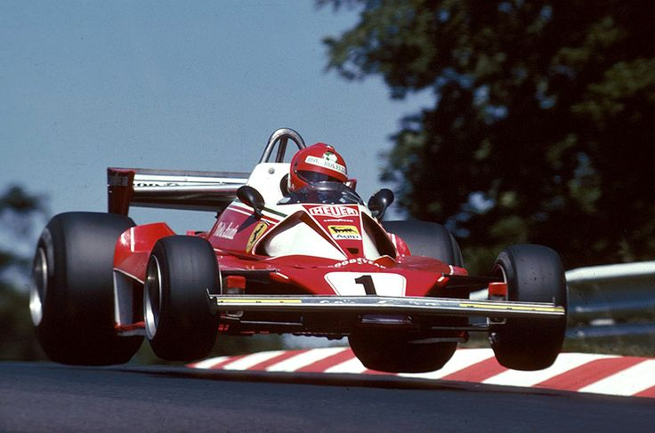

Az első Formula 1 Világbajnokság futamja – Silverstone, 1950. május 13.
A kezdetek (1950–1960)
A Formula 1 Világbajnokság 1950. május 13-án indult el a brit Silverstone-on. A FIA (Nemzetközi Automobil Szövetség) hozta létre a sorozatot, amelynek első bajnoka az olasz Giuseppe Farina lett, Alfa Romeóval. Az ötvenes évek domináns csapatai az Alfa Romeo, a Ferrari és a Maserati voltak.
Juan Manuel Fangio – argentin versenyző – öt világbajnoki címet szerzett ebben az évtizedben, ami sokáig páratlan rekordnak számított. A versenyeket Európában, de Indianapolisban (USA) is rendezték.
„A verseny nem azzal kezdődik, hogy kizöldül a lámpa – hanem azzal, hogy az autóba szállsz."

Ferrari 312B – a 70-es évek F1-es ikonja

Niki Lauda a Nürburgringen, 1975-ben
A brit invázió és technikai forradalmak (1960–1980)
A hatvanas évektől a brit csapatok (Lotus, Cooper, BRM) átvették az irányítást. A Lotus bevezette a monocoque karosszériát és a tapadást növelő légterelőket. Jim Clark, Jackie Stewart és Jochen Rindt neve fémjelezte ezt a korszakot.
A hetvenes évek a Niki Lauda és James Hunt közötti legendás rivalizálásról szólt, amit az 1976-os szezon tett felejthetetlenné. Lauda súlyos balesete és visszatérése az F1-es legendárium részévé vált.
A modern korszak (1990–napjaink)
Az 1990-es éveket Ayrton Senna és Alain Prost párharca, majd Michael Schumacher fokozatos felemelkedése uralta. A 2000-es évek első felében Schumacher öt egymást követő bajnoki címet szerzett Ferrarival, megdöntve Fangio rekordját.
2014-ben a turbó-hibrid korszak beköszöntével a Mercedes vált megállíthatatlanná. Lewis Hamilton hét bajnoki címet szerzett, ezzel minden idők legsikeresebb F1-es pilótájává vált. 2021-től a Red Bull–Max Verstappen páros vette át az uralmat.